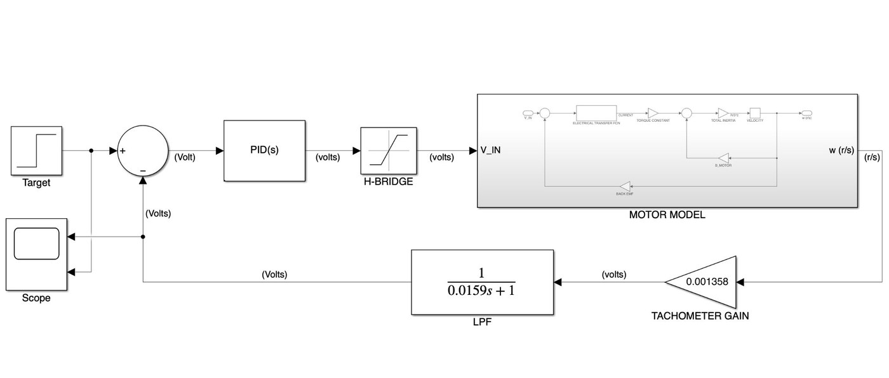
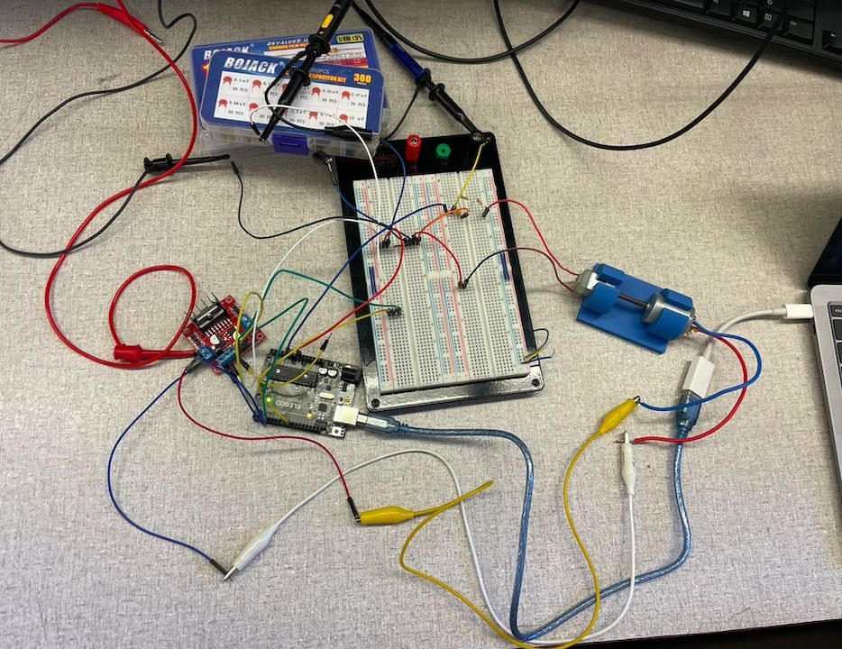
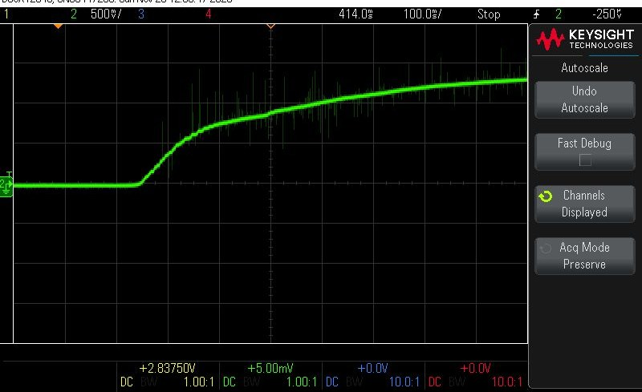
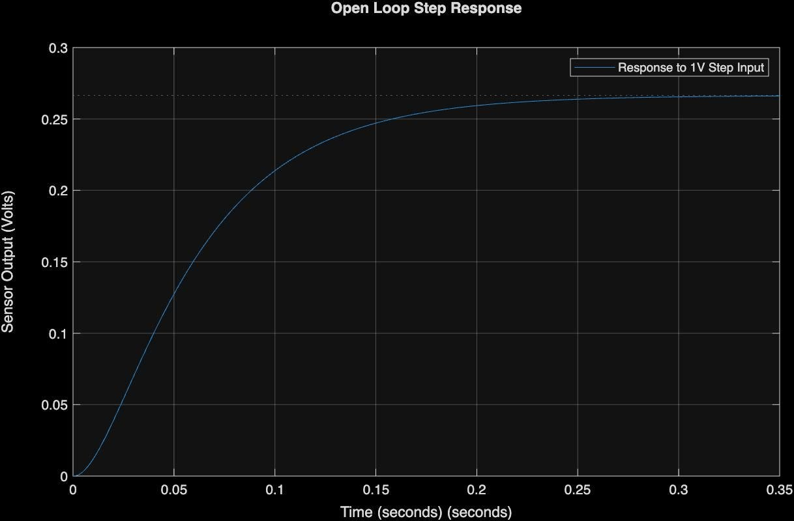
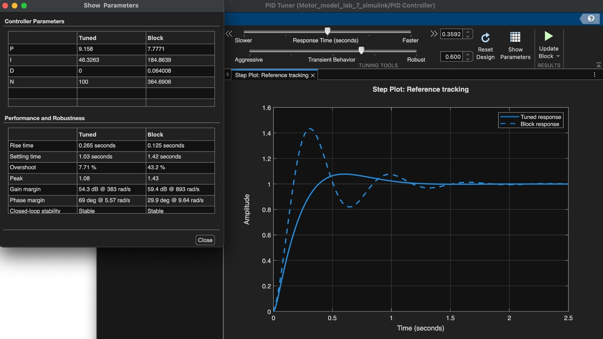
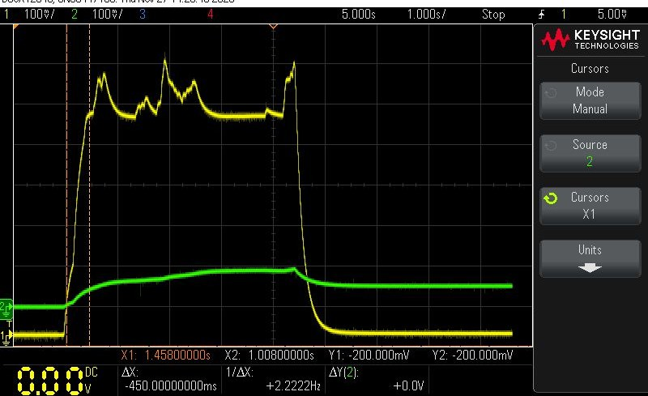
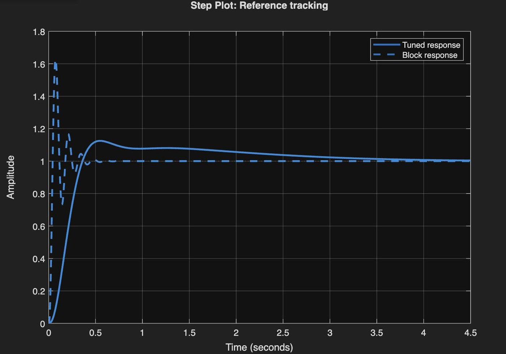

Two labs with one motor: speed control with a tachometer, then position control with an encoder. The first model was 6.5× too fast. Fitting it to a single oscilloscope step test brought the model's closed-loop prediction within 6% of the hardware.
Course
ME 285 Mechatronics, SJSU, Fall 2025 (with Pooja Tiwari)
Hardware
DC motor, tachometer, quadrature encoder, H-bridge, Arduino, RC filters
A Simulink model to design the controller before touching hardware.

velocity loop: PID, H-bridge, motor model, tachometer gain and 10 Hz low-pass filter
What we built
We built the motor as an armature circuit (resistance 1.2 Ω, inductance 0.49 mH) driving the rotor's inertia, with a tachometer feeding back through a 10 Hz low-pass filter. The model works in volts, the way the Arduino sees the signals (8000 RPM ≈ 1.14 V). Tuning it with MATLAB's PID tuner gave P = 7.77, I = 184.9, D = 0.064: about 42 ms rise time, 7% overshoot, and comfortable stability margins (39 dB gain, 69° phase).
Concepts
DC motor dynamics
Transfer functions
Simulink
PID tuning
Gain and phase margins
02
Measure the real motor
Check the model against the hardware with the simplest test that works.

Arduino, H-bridge, motor with tachometer and RC filter

real motor: open-loop step on the oscilloscope
What we built
The hardware: an Arduino driving the motor through an H-bridge, a tachometer for speed, and an RC low-pass filter (3.3 kΩ, 4.7 µF, about 10 Hz) to clean the signal before the Arduino reads it. We applied a 0 → 50% PWM step and captured the speed on the oscilloscope. For a first-order system like this, one step response gives the time constant and gain directly from the 63% point, with no frequency sweep needed.
Concepts
Open-loop step response
Time constant (63% rule)
RC low-pass filtering
Oscilloscope measurement
Challenges and fixes
problem
The model and the motor disagreed badly: the model's time constant was 54 ms, the real motor's 350 ms. The model was 6.5× too fast.
fix
Treated it as a system identification problem: keep the model's structure, but fit its mechanical parameters to the measured response.
03
Identify the real parameters, then retune
Make the model match the motor, so the controller designed on it works on hardware.

model's open-loop response before calibration (rise in ~0.12 s)

retuning PID on the calibrated model
What we built
We recalculated the total inertia J to force the model's time constant to the measured 350 ms, then tuned viscous friction b to match the steady-state gain and the slight overshoot, iterating between the two because each affects both. Final values: J = 1.11 × 10⁻⁵ kg·m² (about 10× the datasheet's rotor-plus-tachometer figure) and b = 1.0 × 10⁻⁵ N·m·s/rad. The calibrated model's open-loop rise time is 794 ms against 770 ms measured. Retuning on it gave P = 9.16, I = 46.3, D = 0.
Concepts
System identification
Parameter fitting
Model validation
Controller retuning
Challenges and fixes
problem
The datasheet inertia only covers the rotor and tachometer, not everything attached to the shaft.
fix
Fitted J from the measured time constant instead of trusting the datasheet. It came out about 10× larger.
04
Close the velocity loop on hardware
Run the retuned PID on the Arduino and compare with the model.
With the retuned gains, the real motor's closed-loop rise time was 250 ms against the model's 265 ms, a 6% difference, with zero steady-state error and clean settling. The model had been off by 6.5× before identification.
Concepts
Closed-loop PID on a microcontroller
Sim-to-real comparison
Steady-state error
Challenges and fixes
problem
The model still predicts a slightly sharper start than the motor delivers.
fix
Expected: the model assumes unlimited voltage and current, while the real H-bridge saturates. The gains were robust to that anyway.
05
Position control with the encoder
Turn the motor to an exact angle (4 rad) and stop there.
encoder, H-bridge and filter wiring

real motor: position (green) and velocity (yellow) during a position step

model with the final hardware gains
What we built
The motor's quadrature encoder gives 20 pulses per revolution, so 80 counts per revolution with all four edges: 12.73 counts per radian, and the 4 rad target is 50.93 counts. We reused J and b from the velocity lab, designed the position PID in Simulink (P = 0.31, I = 0.20, D = 0.095), and ran it on the Arduino at a 10 ms loop.
Concepts
Quadrature encoders
Position PID
Static friction (stiction)
Derivative filtering
Discrete-time control
Challenges and fixes
problem
With the Simulink gains the motor stalled short of the target: the linear model has no static friction, so the gains were far too weak to break it.
fix
Raised the gains on hardware until the motor reached the target reliably: P = 12, I = 0.5, D = 1. Zero steady-state error.
problem
The high gains cause fast oscillations in velocity while the motor is moving, and the H-bridge overheated under the high power demand.
lesson
Accepted the oscillation as the trade-off for reaching the target, and listed what the model would need to predict it: encoder and load inertia, the derivative filter's phase lag, and a zero-order hold for the 10 ms loop.
/results
Results
One step test turned a model that was 6.5× off into one that predicts the hardware within 6%.
6.5×how much too fast the datasheet model was (54 ms vs. 350 ms time constant)
6%closed-loop rise time difference after identification: 250 ms measured vs. 265 ms predicted
0steady-state position error at the 4 rad target with the hardware-tuned gains